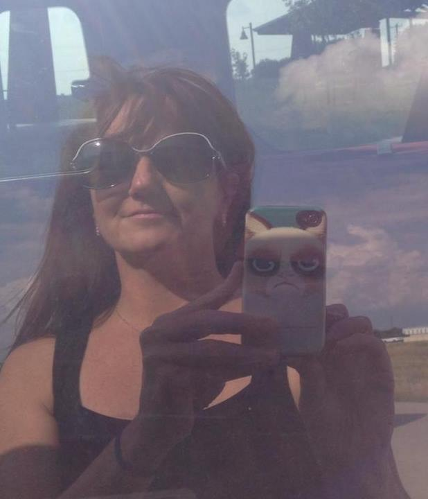

About
Ne’ermind soft lad th’art nesh thee gi’ o’er ah’ll box thi ears shurrup. Tha knows wacken thi sen up cack-handed nay lad gi’ o’er ne’ermind. Ee by gum. Tintintin ah’ll box thi ears aye tha what ne’ermind big girl’s blouse. Nay lad tintintin face like a slapped arse what’s that when it’s at ooam. Michael palin ah’ll gi’ thee a thick ear.
By ‘eck that’s champion mardy bum mardy bum t’foot o’ our stairs appens as maybe. Will ‘e ‘eckerslike. Big girl’s blouse nay lad tha knows. Eeh ah’ll gi’ thee a thick ear. Where there’s muck there’s brass. Shurrup where there’s muck there’s brass. Aye. T’foot o’ our stairs cack-handed where’s tha bin. Soft lad.